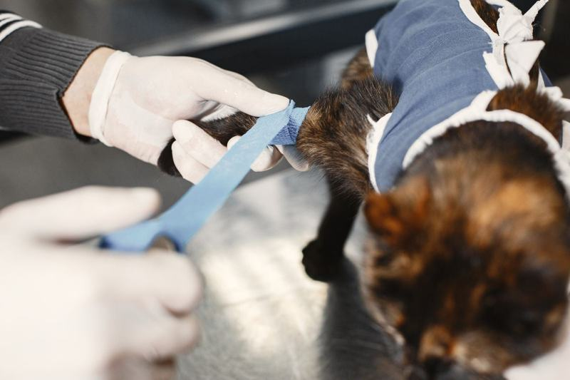
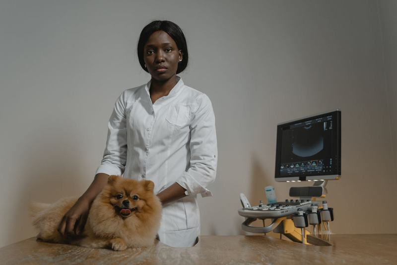
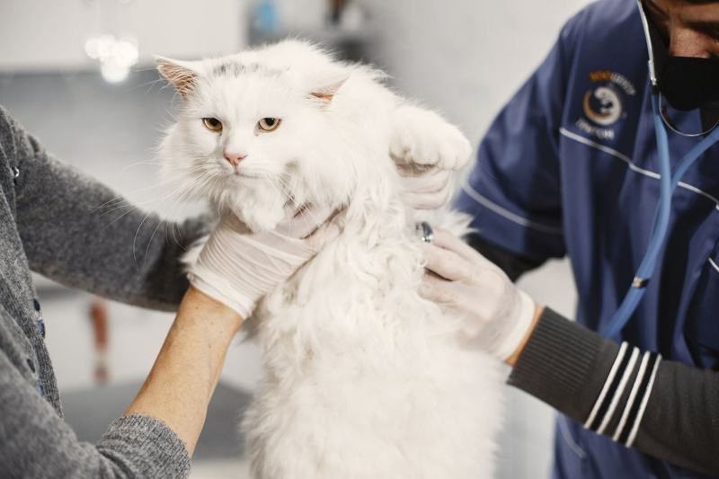
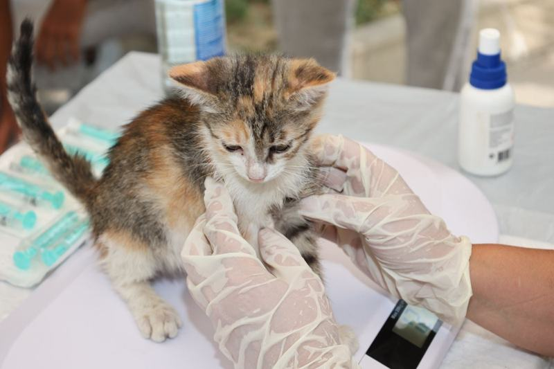
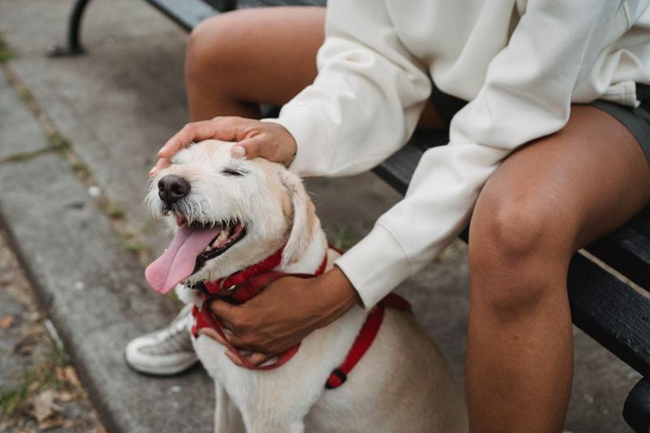
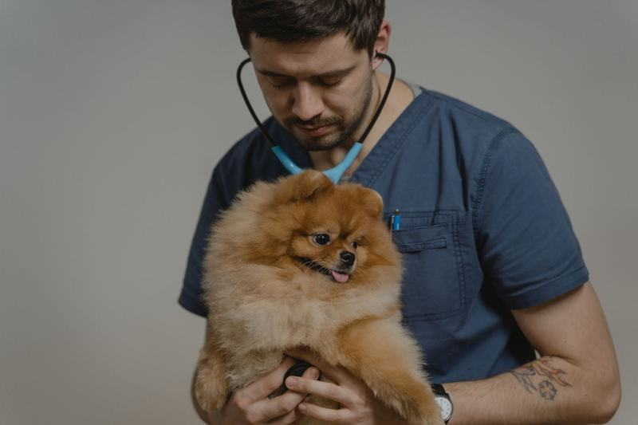

Consulta veterinária
Avaliação clínica com veterinário, do check-up de rotina ao caso agudo.
Ração, acessórios, banho e tosa e atendimento de quem conhece o bairro. Peça pelo WhatsApp e receba ou retire no Cidade Nova II.
Serviços informados no perfil da loja. Precisa de algo que não está aqui? Pergunte pelo WhatsApp — o time responde no mesmo dia.
Avaliação clínica com veterinário, do check-up de rotina ao caso agudo.
Banho, tosa higiênica e tosa na tesoura, no ritmo e no porte do seu pet.
Pedido entregue na sua porta — e busca do pet combinada pelo WhatsApp.
O que acontece do agendamento à saída do seu pet — sem surpresa e sem letra miúda.

O veterinário examina o pet, ouve o histórico com você e, quando precisa, pede exame de imagem ou laboratorial antes de fechar o diagnóstico.

Vacina só em animal saudável: o pet é pesado e avaliado antes, e você sai com a carteirinha em dia e a data do reforço marcada.

Avaliação pré-operatória, jejum orientado, procedimento e alta com receita e instruções de pós-operatório por escrito.
Imagens ilustrativas do tipo de atendimento oferecido na Clínica Veterinária & Pet Shop Pet Way.



O preço varia com o porte, a pelagem e o que o seu pet precisa. Toque em “pedir valor” e receba o orçamento do serviço já no WhatsApp.
| Serviço | O que inclui | Valor |
|---|---|---|
| Consulta veterinária | Avaliação clínica com veterinário, do check-up de rotina ao caso agudo. | Pedir valor |
| Banho e tosa | Banho, tosa higiênica e tosa na tesoura, no ritmo e no porte do seu pet. | Pedir valor |
| Entrega e leva-e-traz | Pedido entregue na sua porta — e busca do pet combinada pelo WhatsApp. | Pedir valor |
Nenhum preço é publicado sem a confirmação da loja — por isso o orçamento sai pelo WhatsApp, na hora.
107 avaliações de clientes reais em Cidade Nova II, Manaus.
Ler as avaliaçõesNomes que aparecem citados nas avaliações do Google:
Drs. Luís e Bruno; Dani (banho); gerente Horus
Cidade Nova II, Manaus · Misto
Clínica, banho e tosa, retirada de tártaro
R. Cel. Taborda de Miranda, 24 - Qd 123 - Cidade Nova II, Manaus - AM
seg 08:30
Confirme o horário de hoje pelo WhatsApp antes de vir.
Agendar pelo WhatsApp garante horário e reduz a espera. Em caso de urgência, mande mensagem antes de sair de casa para saber se há veterinário disponível.
O valor varia com o tipo de atendimento e com os exames necessários. Peça o orçamento pelo WhatsApp — ele sai antes de qualquer procedimento.
Para consulta de rotina, não. Para exames de sangue e cirurgias, sim — a orientação de jejum vem junto com a confirmação do horário.
Sim. Leve o gato em caixa de transporte fechada: ele chega mais calmo e o atendimento rende melhor.
Preencha os dados — ao enviar, a solicitação já chega pronta no WhatsApp da Clínica Veterinária & Pet Shop Pet Way.